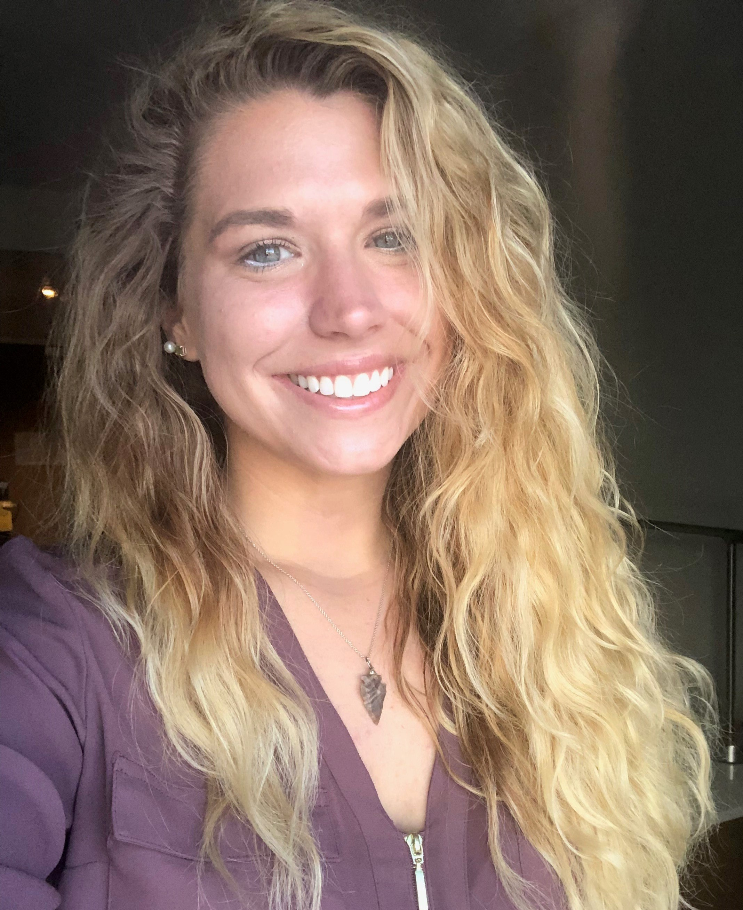

hey there, my name is
Olivia | [OG].
human-centered design & business strategist

a little ditty about OG
Former Technology Strategy Consultant turned human-centered User Experience Designer & Strategist, I strive to work in the exciting intersection of strategic business, empathetic design, and innovative technology. I’m currently in my 2nd year of pursuing my dual masters degree in Business Administration and Human-Computer Interaction/ User Experience, focusing on growing my knowledge and experience on how to work with cross-functional teams to design & development products & services to address people, business, and societal needs.